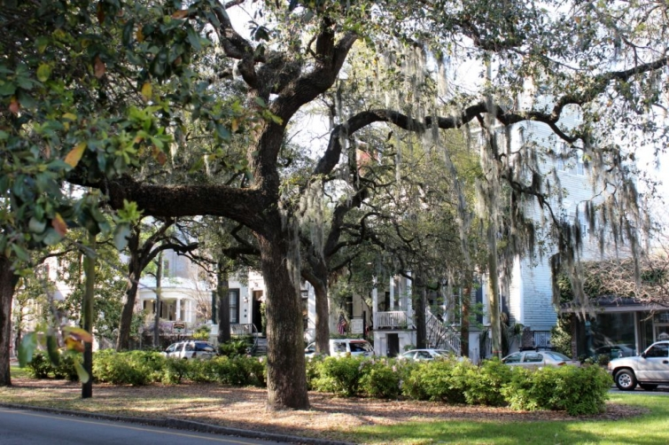
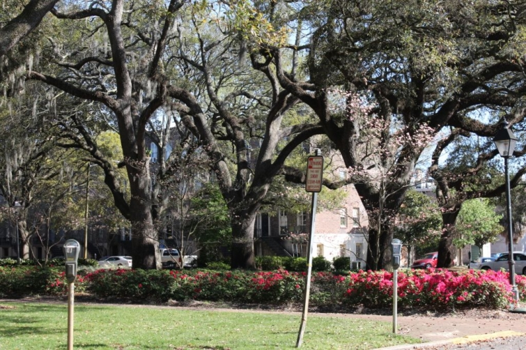

.png)
.PNG)
.PNG)
.PNG)
.PNG)
.PNG)
.JPG)
.JPG)
.PNG)
.PNG)


You see, not only did we get to enjoy some wonderful places on Tybee Island for my break, but we also spent a day in beautiful old Savannah. The squares in the historic district were simply gorgeous with all their ancient trees dressed in Spanish moss, and some of the azaleas were covered in bright blooms.
I loved the benches there for you to sit upon and soak in the peaceful scene. (And the weather couldn’t have been more perfect.)

And then of course, we can’t forget all the amazing architecture! We came upon a woman working on the plants there on her steps when I asked if I could take a photograph of it. She said that she would step inside so that I could get a good shot. Apparently this happens all the time in downtown Savannah. 🙂
This very photogenic church was the Cathedral of St. John the Baptist.
Beyond the beauty of the squares and the architecture, Savannah had some very fun places to shop.
I always enjoy One Fish Two Fish.
Care to look around inside?
We also made a quick stop in Parker’s Market. I was looking for Polk’s Market that carried fresh produce and plants years ago, but I have since learned that it moved out of Savannah a number of years ago. (Such a loss.)
Parker’s had some interesting home accessories and a few food and drink items.
They also had a deli with a number of yummy looking dishes. 🙂
But my favorite store in Savannah is The Paris Market. It’s huge!
Does this scene make you feel as if you are in France?
I couldn’t resist photographing that bicycle. 🙂
And another bicycle for children…
There were bags of coffee, tins of tea, and jars of old fashioned candy.
An Easter display with baskets and bunnies greeted you in one doorway.
The downstairs area was filled with treasures.
I would love to have those amazing cabinets there on the main floor. That wood!!
We didn’t stop to get any treats at the counter in the Paris Market. What I really wanted was an ice cream cone from Leopold’s Ice Cream. Unfortunately, when we arrived there (right down the street from the Paris Market) the line was spilling out the door and onto the sidewalk in front. It was getting late in the day, so we decided not to wait. I will have to save that trip to the ice cream store for another visit to Savannah.
But we did stop in here at Back in the Day Bakery. This is one cute bakery run by Cheryl and Griff Day.
Cheryl was named a “Top Pastry Pro” this year by Martha Stewart Weddings. (a major big award!)
Their cookbook was featured last year in Food & Wine’s Best of the Best Cookbooks,
and their bakery was featured in the New York Times book, 36 Hours, Southeast Edition.
And you know, I just had to purchase a few things since we were there. 🙂 …a blondie, a lavender cookie (which smelled and tasted unbelievable yummy), an old fashioned cupcake, and a “Pink Lady” cupcake. I was very impressed with the cupcakes. Each one tasted like a made-from-scratch cupcake should.
I also purchased one of their cookbooks – autographed by both Cheryl and Griff – for you! It is such a great cookbook, I was really tempted to keep it for myself, but I know we will be going back to Savannah one day, and I can get another copy then. I want you to have a taste of Savannah, so to wind up my blog birthday month, I am doing one more giveaway. There is the Back in the Day Cookbook, the Lady and Sons Just Desserts cookbook, and Paula Deen’s home decorating book Savannah Style. I really don’t feel like I can give you a taste of Savannah without mentioning Paula Deen, and if you are not a fan of Paula Deen, then perhaps you can pass those books on to someone else. (Yes, I know Paula can be a controversial topic.)
As usual,to enter for the random drawing just leave a comment on this post and/or any others that publish between now (4/24/14) and next Wed. night at midnight (4/30/14). Only one comment per post please, but you may comment on more than one post to be entered more than one time. 🙂 The winner will be announced in early May. (I cannot believe May is almost here!!)
Have you been to Savannah? If so, do you have any recommendations for us?
We’d love to hear!


.PNG)
I love everything about Savannah! I’ve always loved Paula Deen. A very gracious lady. I hope her fans will continue their support. Savannah is so beautiful this time of year.As an avid gardener I love all the beautiful parks and gardens . Thanks for the lovely “tour”.It’s obvious you love and appreciate your beautiful state.
Savannah is one of my favorite cities! I just came across this post. I’m headed to Savannah again this weekend. This time with a couple girlfriends from high school. We are leaving the hubby’s at home 🙂
My favorite things to do in Savannah are:
1. Visit Bonaventure Cemetery~ It is so beautiful there. Shannon Scott does a tour best to go the in daytime. He is the best storyteller imo. The statues are amazing and he will tell you so many things about the history.
2. Dinner at Old Pink House~ It’s one of the best restaurants I’ve been to there. They have the best cheese grits!
3. Leopold’s Ice cream is to die for.
4. Lunch at Mrs. Wilkes boarding house~ Only open during the week for like 3 hours a day. Go early the line will wrap around. It’s on Jones St. The most beautiful and most photographed street in Savannah!
5. I love to stay in Bed and Breakfasts when I go to Savannah. I’ve stayed at The Green Palm Inn and Kehoe House B&B. Both were very nice.
6. The French onion soup at Five Pence Pub!!
7. You must take a Trolley tour to check everything out too!
Those are just some things I’ve done.
I just came across this Savannah post. I am making a list of the places to visit and this post was so timely. We are going in September for our 25th wedding anniversay! I have never been and neither has my husband – we are very excited! Thank you for all the great ideas. I will have to pack extra “empty” suitcases for the treasures I find!
As always, your photos are stunning! I had the luxury of spending a day in Savannah a few years ago. What a delightful return trip your post has been.
I am truly a southern gal that the stork dropped north of the Mason-Dixon Line. I was very briefly in Savannah many years ago, only a overnight stop, but I fell in love with the quaintness immediately. It’s on my “to visit soon” list & probably not wasnt to leave after list. Lol to me this town just speaks SOUTH! I watched Paula, & always hoped she would incorporate pics from around town.
Cookbooks! Love them!!
I fell in love with my husband in Savannah. It’s one of my favorite places in the world. Tybee Island is great, too.
The history, the shops, the food, the River shops, and even the cemeteries are fascinating.
Thanks for sharing your trip to Savannah!
Hello Kelly,
I enjoy your posts, especially the ones about movie sets. I am big fan of seeking out movie set locations and visiting them. Keep up the good work and the travels.
Grant Grabert
i just love opening my Talk of the House in my email. Love,Love, all your adventures and pictures that you share. Savannah is on my list of places to see. Big, Paula Deen fan and forever will be!! I am in love with Paula Deens’s current house and front porch. Just Beautiful 🙂
I think if I could start all over with my shop I would have a shop just like The Paris Market! Amazing!
I have been to Savannah once just for a day, would love to go back and spend more time there.
favorite blog…love Savannah…thank you for the giveaway
Love Savannah and love your blog about this trip. Thanks for the chance to win.
I still love Paula Deen and her boys! Hoping for a great “come-back” for her.
I reminded my husband today that he promised me a “southern sampler” trip that included Savannah, Charleston, and Augusta. I love the unique places you have photographed and I can’t wait to go. (P.S. I love that to enter to win on your blog we don’t have to jump through so many hoops…just comment…no facebook, instagram, pinterest, etc.)
Love your tour of Savannah. Can’t wait to go there myself. I miss seeing Ms. Paula on her cooking shows and someone needs to bring her back.
Thank you for sharing your trip to Savannah & Tybee Island. Both of which on my bucket list. I do miss Paula’s dynamic personality in the media.
Although I live in Arizona, I love everything Southern!! Food,decorating, Paula Dean…Its my dream to visit the South some day and explore Savannah!! It looks like you had a great time..
I have wanted to visit Savannah for the longest time!
We absolutely LOVE Mermaid Cottages, Tybee Island, and Savannah and have been there three years in a row! Most recently just a month ago. We also made a point of going to Back In the Day Bakery and I should have picked up the cookbook then. Would really love to have an autographed one now!
Kelly what a wonderful way of sharing an AWESOME city here in Georgia! I have been several times and still haven’t seen all there is to offer. Our family loves to go to Savannah and Tybee. So much to see and do! I am feeling a need to go back again real soon. And we have the luxury to live just 3 hours up the road. My dream is to eat at Pauala Deen’s and run into her!!!
Beautiful–I would love to spend some time there exploring…
We drove through Savannah a couple of years ago on our way to Florida. I’ve always wanted to go back & explore.
Love Savannah and definitely plan to go there again soon. I have never eaten at Back in the Day Bakery so will be adding it to my next trip. Thanks for making me want to go again.
Memories, I haven’t been to Savannah in years. Loved it when we went. Didn’t get to see much due to it was a quick trip but remember making the Hubs take me looking for the rainbow row houses. While we were driving back to Charleston where we were staying we got pulled over due to the Hubs made a turn down a one way street. The police office didn’t give him a ticket due to I think he could tell he had been made to tour all day to a bunch of shops that he really didn’t want to go to. LOL Funny the little things you remember. Thanks for sharing, I love everything that you share.
Thanks for the tour of Savannah and the giveaway!
SIGH!! Those pics. took me back to my two visits last spring. LOVE that beautiful city and the people are the best!!! Thanks for the giveaway.
Ahhhhhhh, it is Saturday morning, my coffee is in hand and I just sat down to your beautiful blog. It has been such a busy winter for me, thank you for taking me to where I couldn’t go myself!
omg !!! awesome trip and give-away !!!!!!!!!!!! Love the historic district !!!! and the bakery, well awesome !!!!!!!!!!!
Oh Oh Oh I’d love to visit Savannah, GA. I want Paula Dean’s book too. I have been eying that book for quite some time. I love your website so so much.
My grandparents and other family lived in Savannah their entire lives…it has been ages since I visited there. This post is wonderful and I am saving the travel tips, shops and restaurant suggestions for a future visit!
Have you eaten at Mrs Wilkes Boarding House in Savannah? The tables are crowded with all kinds of southern comfort food and seat ten people, boarding house style. It’s a must!
I love Savannah!! I have family that moved there and we love to visit. You can just imagine taking a step back in time and see the Civil War soldiers marching thru. Thanks for the tour.
Jeanne
I have a niece who has just moved to savannah and I can’t wait to share these shops with her. I may have to visit her and go to shops along with her. I would love to win your give a way. Thanks for a great post. I always enjoy your blog.
I am a Georgia girl thats been exiled to California! I would love to win these Southern cookbooks!
Thanks
Sarah
Last spring went we went on our first Beaufort/Charleston/Savannah vacation I was eager to go to the Paris Market. Sadly I was not very impressed, but it seems I missed the downstairs!!Silly me, but we did go to Leopolds, waited in a quick moving line and had divine hot fudge sundaes on pistachio ice cream. Take my advice, next time you go wait in line, it is well worth it:).
I was in Savannah over 25 years ago- it looks just as pretty today as then. I love your site- please keep up all yours great work!
Enjoyed your wonderful Spring post of scenes of Savannah!! The South is so beautiful this time of the year. I shared your post with my daughter-law and she “loves ” it. Thanks for your travel photos and inspiring decorations!
I have Paula’s Savannah Style book as well as a few of her cookbooks, but not Just Desserts. And I have wished for the Back in the Day Cookbook. I browse thru it when I see it, and don’t know why I haven’t purchased it yet! I am so dying to visit Savannah some day! Thanks for the tour and suggestions on what to see!
My family visited Savannah And Tybee Island a couple years ago. One of my favorite things we did was to take a walking tour from Bonnie at Bonnie Blue Tours. She is full of interesting information about Savannah. I highly recommend her tour!
Kelly, you definitely made up my mind to visit Savannah today. We are leaving Daytona this morning heading back to Ohio. And yesterday while celebrating my birthday, my husband said we could visit Savannah. I will jot down your sights from this post and hopefully see them in person. Love your sight-seeing posts.
I live in Charleston and have never been to Savannah. Now I definitely want to check it out. Great post!
We are taking our girls to Tybee this summer! We’re staying at one of the Mermaid Cottages and we are sooooooo excited. I’m bookmarking your post for shopping references. ;o)
The timing for this post was perfect – we are planning a trip to Savannah in June. It looks just as beautiful as I anticipated.
Thank you so much for sharing!
Having only driven through the southern states many years ago , when moving from Penn. to Calif. there are many areas I’d really love to explore, especially the Savannah / Charleston area. Your blog, as always, makes one want to remember all the places you mention to visit. Thanks for the opportunity for someone to win those great books. Take care, Lindy
Hi Kelly! I’ve never been to Savannah, but I certainly would like to visit there sometime soon. I couldn’t help notice the Easy-Bake-Oven on the upper display shelf in the Back in the Day Bakery. That brought back some really fond memories! It’s so nice of you to have a book giveaway to share a taste of Savannah. Keeping my fingers crossed! 😉
What a charming southern city! Each shop that you shared looked so inviting. Thank you!
I love Savannah, it’s the reason we moved to the South from California. I love Paula Deen too.
My husband and I spent 2 days in Savannah a few weeks ago. The azaleas were just starting to bloom. Gorgeous! Would have loved to have read this post prior to our visit. Oh well, next time…because there definitely will be a next time! We fell in love with the charm of Savannah.
I’ve never been, but it is on my bucket list! What’s on yours?
I LOVE Paula Deen! She is the reason I want to visit Savannah, I love her cooking, style, sense of humor and let’s not forget that laugh! and hey, my hubby loves my “Paula Deen” fried chicken! What a nice post, and a giveaway too! Good Luck to everyone!
I love Savannah. Most of my trips there have been with 100+ 8th graders on field trips, so I didn’t get to do much shopping. I would love to go to the shops you shared with us in this post – and get some ice cream!
I love Savannah! Haven’t been there for a few years, but I love the beauty of the architecture there. I am also a huge fan of Back in the Day Bakery, so I’m keeping my fingers crossed for the cookbooks! Thanks so much for taking us along on your travels!
Your tour was such a treat. Thank you!
Hi Kelly, thank you for the tour. We go to Hilton Head every summer and have never gone to Savannah/Charleston area. I think that will change thanks to you….great post and so enjoy all of your tours wherever you take us. Those books look great…thanks for the opportunity to win. Mickey
I have never been to Savannah but plan to one day. Looks like a very lovely city. I will be sure to visit the places you talked about. Thanks for sharing your great photos with us.
Hi Kelly,
Thank you so much for a wonderful give away. I love that you give so many books away since I am a librarian!
I have never been to Savannah but would love to go. I especially loved the series on Mary Kay Andrews and I have read all her books.
You do a great job keeping your blog interesting and informative.
Thanks,
Dawn R.
Kelly, I loved your Savannah tour. It made me want to make reservations immediately. I have been there many years ago and I think it is time to go back!
Boy you sure know how to pack a lot of fun adventure into spring break! I have not been to Savannah since I took my daughter to see Juliet Lowe ‘s house….goodness do I have her name right…Girl Scout founder? Looks like I definitely need to return!
Enjoyed the post and would have loved shopping in Savannah with you. I think I had seen that bakery featured on the Food Channel, the items you chose looked delish! I have been to Savannah twice and would dearly like to visit there, again. (Love me some Paula Deen, too, am missing her show now that it’s no longer on.)
it’s always dangerous for me when i step inside the paris market…david just sits outside and waits for me! what eye candy overload, it’s hard to take it all in. did you make it to No. 411 over on Whitaker Street? savannah is always gorgeous but especially in the springtime.
i don’t know how i’ve missed one fish two fish but i’ve never been and now i want to check out parkers market…another place i’ve apparently missed out seeing.
well, now just another excuse to go back to savannah…soon!
Seeing the Paula Deen books makes me miss seeing her on the Food Network! I loved it when Cheryl Day visited Paula on her show!
I love cookbooks and read them like novels. 🙂
One of my favorite Savannah activities is walking around the squares…
However, that won’t happen anytime soon. I fell in my classroom and severely fractured my pelvis. Transported to nearby large city for surgery in trauma center, several weeks in rehab hospital, and now at home with a restriction of no weight-bearing on my left leg for three months. Then I will learn to walk again. The books will help me through the lengthy recovery until I can again stroll around the beautiful squares of Savannah.
Savannah is a charming southern city, and I enjoyed visiting there a few years ago. What a nice giveaway, too. Thanks for the chance to win.
I love Savannah! I love the quaint shops!
Haven’t had the pleasure of visiting Savannah. Thank you for giving us a small taste of its pleasures! Thank you for the opportunity to win these fun books.
Awesome photo-tour! I love to go to Savannah too, but there are several of these places I haven’t found yet and they look amazing–especially that bakery! It will definitely be on the itinerary for the next trip! My niece got married on the Isle of Hope a few years ago, and her reception was at a warehouse on River Street. We rode a trolly back from the church to the reception, stopping at Wormsloe for pics. It was in November and probably the coldest day I remember in years. That was an Arctic Experience…but still so much fun. 🙂 Thanks for sharing!
I haven’t been to Savannah since my Junior High or High School Days when my grandparents lived there. I would love to go back! The shops you visited look incredible!!! Thanks for the chance to win these awesome books.
I have always wanted to visit Savanah. Maybe someday!!!
Amazing! I have never been to Savannah. Another to add to my bucket list!
My parents are from Savannah and I still have an uncle that lives there. I haven’t been in a while. My daughter just graduated from GSU in Statesboro, only an hour away from Savannah. I think when I go to pick up her little brother, who also goes to GSU, for the summer, I just may stay a night with my daughter and take her shopping in Savannah. Then maybe hit Tybee for dinner! So glad you had a great time on your Spring Break! Summer will be here soon.
Awesome post–thanks so much for all the beautiful pictures–I would love to get there some day!!! Cheers!
I, too, have wanted to visit Savannah since reading In the Garden of Good and Evil years ago. Thanks Kelly, for showing us so many beautiful cities of the South!
~Ann
I can’t wait to go to Savannah SOON! Thanks for sharing the highlights of your trip. I love Paula and miss her show.
Savannah is so beautiful! Your pics remind me that it is time to leave chilly New England and head south for a visit!
Looks like you had a fun and busy day in Savannah. Back in the Day looked wonderful and reading that menu just made me hungry. So nice of you to do these giveaways. Fingers crossed!
I went to Savannah in March with a group of friends for the home tour. We never made it to the bakery which was on our to do list!
Cant wait to visit these places when I am there this summer!!!
One Fish Two Fish is one of my favorite stops. A couple of years ago, they had a ton of beautiful painted furniture.
I would love that cookbook from Back in the Day. Enjoyed the tour and the reminder that it is time to get back!
Never been to Savannah but it sure is on our bucket list:). Your giveaway is luscious!!!
I am a Northern girl who is fascinated by the
South. I truly enjoy your Southern tours, which emphasize food and architecture -two of my favorite things! Savannah looks like a wonderful place to visit and it is going on my ever-growing list of Southern places to tour.
Kelly,
Ever since I read (and saw the movie) In the Garden of Good and Evil, I’ve wanted to visit Savannah. I’m so happy to have had a wonderful “Kelly Armchair Travel” experience. You always share exactly what I’d be interested in seeing. The One Fish Two Fish shop was especially tempting with its array of blue and white items and other little treasures I wish I could check out in person. 🙂
What a great giveaway. I’ve read about the pastry chef, possibly in Martha Stewart Living magazine.
You had a great Spring Break, my friend!
xo,
Karen
Oh, how I love taking a little day trip to Savannah! The Paris Market is wonderful & so much cheaper than flying to Paris. (Honey, we can either go spend money in Savannah or fly ALL the way across the Atlantic to Paris…Hmm…Which seems the better deal???) We LOVE Back in the Day Bakery! Next time, get the Bacon Jam on ciabatta, it’s SO good. It sounds odd, but it tastes like very spicy pork bbq with a kick. Her cupcakes are delicious, and try the chocolate chip cookies with sea salt on the top, they are our family’s favorite! All of the recipes are in her cookbook and they are the nicest couple. Yep, you hit some good spots in Savannah!
Beautiful Savannah…thanks for sharing!!!
We are on our way to Savannah this weekend to meet friends from New Jersey. It will be a quick trip because we have to be back for Prom on Saturday! Thanks for some reminders of great shops to visit!
What a coincidence, that just after posting kind of a “love letter” to Savannah + Tybee Island on Facebook, what blog post do I come across but YOURS!
We stayed at the retro/super fun Thunderbird Inn during our much-too-short visit in ’07.
Looks like you went to all the shops I did.
I’ve seen articles about Back in the Day Bakery + long to see it in person — I wish our local bakery was more like it!
While I have never been I now have an idea of where I want to go when I get there in October. It all looks amazing! Thank you for sharing.
Its so much fun going on your vacation adventures with you. Love your photographs and love your blog.
Such a lovely visit to a great southern city! Thanks for a give Way
I really enjoy your travel stories because you are on the opposite side of the country from my location and I’ve never been farther east than a couple of miles into Wisconsin. Savannah and Charleston on are on my travel wish list! Fingers crossed to win the Back in the Day cookbook, thanks!
I have been to Savannah a few times for my hubby’s work (a tag a long) but feel like after I look at your pictures, that I was never there. I never got to see all these fantastic stores you visit and I love each and every one of them. I need to get my hubby to take me back there. Other than my girls blog, your is a favorite. Thanks for sharing.
What a fun trip! And so many beautiful places to see. Thank you for sharing! I feel like I am really getting to know your part of the US through your wonderful photography.
I love the cake plates displayed in the window of “Back in the Day Bakery”… funny, because I am not a cake baker and yet love how they look (and how they taste, of course!).
Thanks again
Cath
I have been but definitely not for long enough…loved all the places you visited.
Love Savannah, love cookbooks, love Paula!! Only been to Savannah one time and really just a short drive thru— so ever since then, I’ve been trying to get back there! So truly glad you featured this grand O’ Southern town! The flowers, the homes, the shopping, the food— oh my!! Didn’t you love the rabbits in those basket cages? What a nice surprise to come back for one more visit!:)
Thanks for taking us along with you on your beautiful tour of Savannah. You photography is always beautiful!
Would love to visit Savannah….these books would be the next best thing!
I’m from Savannah! Another good place for lunch is Soho South. Definitely get the tomato soup, its scrumptious! And go browse around the Habersham Antique Market. Its got a bit of everything and you can spend a long time in there looking at it all. If you are there at night go on the Hearse Ghost Tour. As the name implies, you sit in a REAL hearse with the top off. So much fun! And the looks you get from people downtown, priceless!! I haven’t been to Back in the Day but I sure will make it there. I’d love to win their cookbook.
What a great post Kelly. Sorry you did not get any ice cream at Leopolds….it is yummo!! And I have to visit Paris Market. I am familiar with One Fish Two Fish and love it. I still have not made it to Back in the Day Bakery. I am headed to Savannah in June so hopefully I can get there then. And what a great give away!! You are so generous!!I would love that Back in the Day Cookbook!
My daughter went to school in Savannah so we went spent the last four years visiting quite frequently. Looks like you hit all of our favorite spots. Just a few restaurants to try Public, Vics on the River, and Social on Tybee are a few of our favorites.
Love cookbooks, and would love to win these. 🙂
Those shops look so delightful! I would like to spend the day rummaging through them. Thanks for posting.
Love Savannah and all it has to offer.
Oh I would love to visit Savannah. That is on my bucket list. I havn’t been to any of these gorgeous Southern cities, but someday. I would love the books, they look amazing. Also, Happy Birthday.
I want to go to Savannah now more than ever since seeing this post! I’m thinking a long route home from our winter home in Naples, FL to our northern digs in Illinois! However, since we’re leaving on our journey Tuesday, I’d have to do some fast talking to get my husband to agree! Some day tho…
Sure enjoyed our trip to Savannah all over again. Thank you. It was a delightful place to visit. Leopold’s ice cream is certainly worth the wait! How long has Back In The Day Bakery been open? I do not recall going there.
Savannah is on my bucket list. Love reading your blog and all the home details.
Hi Kelly: I absolutely love these almost weekly mini vacations I have been blessed to go on through the lens of your camera and your keen eye for photography. Thank you so much!!! Have been to Savannah three times, two of which were whirlwind walks through downtown and one by the riverfront where we ate but can’t remember the name of the restaurant. Loved the architecture of the homes! So old South! Have seen more through your post than any of those visits:-) Thank you so much! Used to watch Paula Dean so much on the Food Network, but I think she was far too over exposed and I began to lose interest. Too much of a good thing maybe? At the end of her tenor I watched more for the way she decorated her home than for the recipes. Have seen episodes where she featured Cheryl Day and her bakery. She was a good promoter of Savannah businesses. Thank you again for the great tour.
I am so behind on my blog reading! So happy I stopped by to hear about one of my favorite places. The last time we were there it was April and hotter than …, but so lovely!
I have never been to Savannah but I plan to go soon. I love to read about. Between your blog and Dixie Delights blog I have made a long list of places I want to visit there. Love it!
Hi Kelly, Wow, thanks for the great info on Savannah! I need to go back again soon. Thanks, too, for the give-away!
Love the posts on your travels. So pretty! Would love to win!
Paris Market is one on my favorite shops anywhere!
My husband and I took a trip to Charleston and Savannah two years ago and I was instantly captivated! Can’t wait to get back there. Since I’m in Phoenix, it may be a while. These books would help ease the wait! Thank you!!
Savannah is a very special place. Thanks for sharing !
What a fun trip you had! You hit all of my favorite spots in Savannah. Thanks for sharing. Now I’m inspired to go for a Savannah visit.
Have been and would love to go back. I spied the Antiques flea market sign that I just bought from Decor Steals. It’s in the basket in the Parkers Market shot.
I’ve never been to Savannah, but it’s on my list! Thanks for this chance to virtually visit.